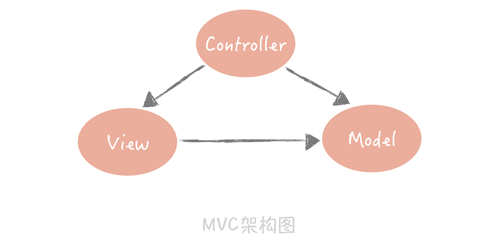
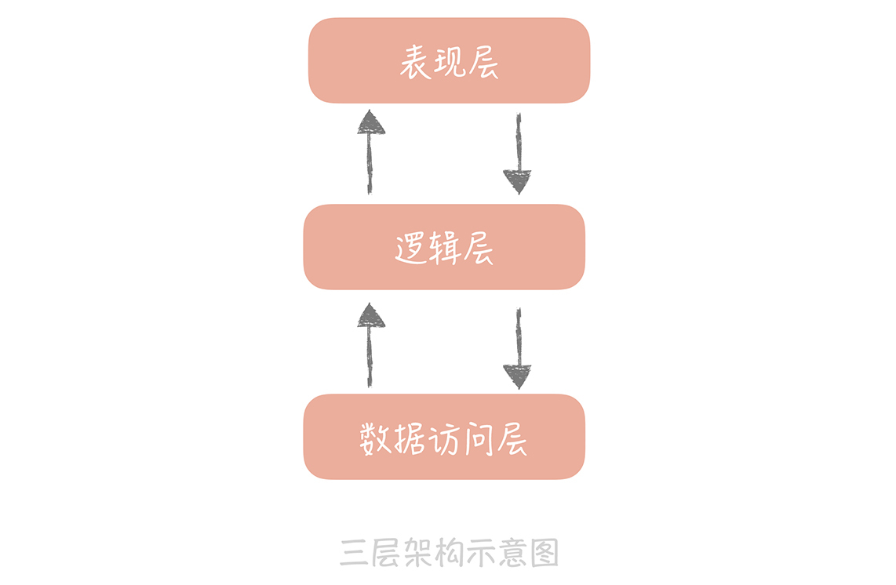
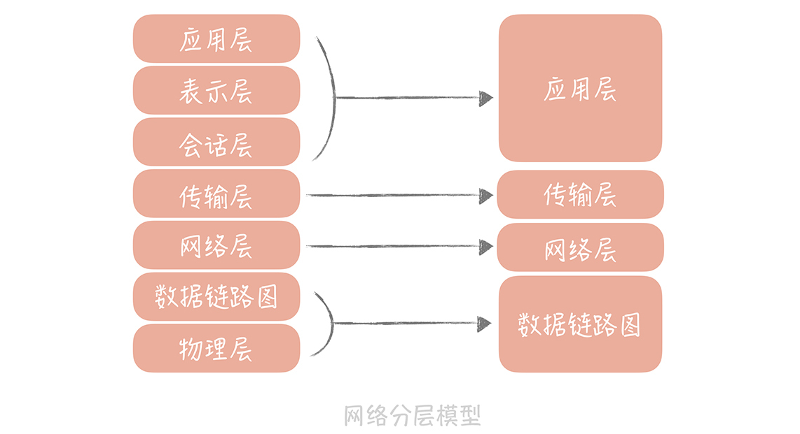
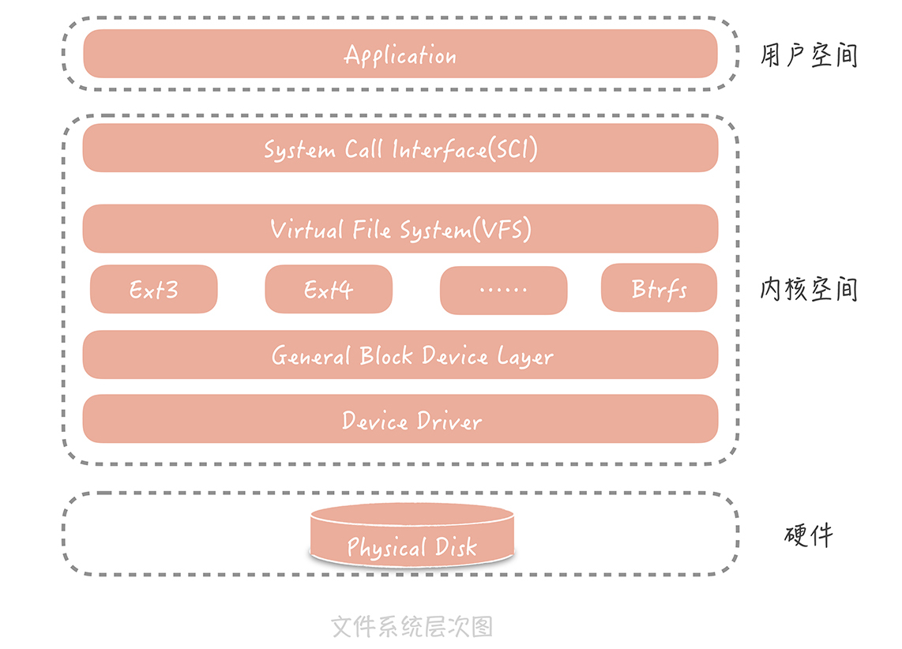
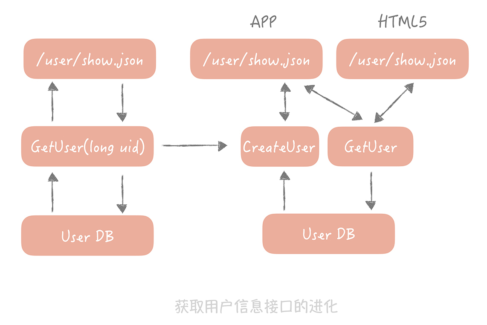

<!DOCTYPE html>

<!-- saved from url=(0046)https://kaiiiz.github.io/hexo-theme-book-demo/ -->

<html xmlns="http://www.w3.org/1999/xhtml">

<head>

    <head>

        <meta http-equiv="Content-Type" content="text/html; charset=UTF-8">

        <meta name="viewport" content="width=device-width, initial-scale=1, maximum-scale=1.0, user-scalable=no">

        <link rel="icon" href="/static/favicon.png">

        <title>02  架构分层：我们为什么一定要这么做？.md.html</title>

        <!-- Spectre.css framework -->

        <link rel="stylesheet" href="/static/index.css">

        <!-- theme css & js -->

        <meta name="generator" content="Hexo 4.2.0">

    </head>


<body>


<div class="book-container">

    <div class="book-sidebar">

        <div class="book-brand">

            <a href="/">

                

                <span>技术文章摘抄</span>

            </a>

        </div>

        <div class="book-menu uncollapsible">

            <ul class="uncollapsible">

                <li><a href="/" class="current-tab">首页</a></li>

            </ul>


            <ul class="uncollapsible">

                <li><a href="../">上一级</a></li>

            </ul>


            <ul class="uncollapsible">

                <li>


                    

                    <a href="/专栏/高并发系统设计40问/00 开篇词  为什么你要学习高并发系统设计？.md.html">00 开篇词  为什么你要学习高并发系统设计？.md.html</a>


                </li>

                <li>


                    

                    <a href="/专栏/高并发系统设计40问/01  高并发系统：它的通用设计方法是什么？.md.html">01  高并发系统：它的通用设计方法是什么？.md.html</a>


                </li>

                <li>


                    <a class="current-tab" href="/专栏/高并发系统设计40问/02  架构分层：我们为什么一定要这么做？.md.html">02  架构分层：我们为什么一定要这么做？.md.html</a>

                    


                </li>

                <li>


                    

                    <a href="/专栏/高并发系统设计40问/03  系统设计目标（一）：如何提升系统性能？.md.html">03  系统设计目标（一）：如何提升系统性能？.md.html</a>


                </li>

                <li>


                    

                    <a href="/专栏/高并发系统设计40问/04  系统设计目标（二）：系统怎样做到高可用？.md.html">04  系统设计目标（二）：系统怎样做到高可用？.md.html</a>


                </li>

                <li>


                    

                    <a href="/专栏/高并发系统设计40问/05  系统设计目标（三）：如何让系统易于扩展？.md.html">05  系统设计目标（三）：如何让系统易于扩展？.md.html</a>


                </li>

                <li>


                    

                    <a href="/专栏/高并发系统设计40问/06  面试现场第一期：当问到组件实现原理时，面试官是在刁难你吗？.md.html">06  面试现场第一期：当问到组件实现原理时，面试官是在刁难你吗？.md.html</a>


                </li>

                <li>


                    

                    <a href="/专栏/高并发系统设计40问/07  池化技术：如何减少频繁创建数据库连接的性能损耗？.md.html">07  池化技术：如何减少频繁创建数据库连接的性能损耗？.md.html</a>


                </li>

                <li>


                    

                    <a href="/专栏/高并发系统设计40问/08  数据库优化方案（一）：查询请求增加时，如何做主从分离？.md.html">08  数据库优化方案（一）：查询请求增加时，如何做主从分离？.md.html</a>


                </li>

                <li>


                    

                    <a href="/专栏/高并发系统设计40问/09  数据库优化方案（二）：写入数据量增加时，如何实现分库分表？.md.html">09  数据库优化方案（二）：写入数据量增加时，如何实现分库分表？.md.html</a>


                </li>

                <li>


                    

                    <a href="/专栏/高并发系统设计40问/10  发号器：如何保证分库分表后ID的全局唯一性？.md.html">10  发号器：如何保证分库分表后ID的全局唯一性？.md.html</a>


                </li>

                <li>


                    

                    <a href="/专栏/高并发系统设计40问/11  NoSQL：在高并发场景下，数据库和NoSQL如何做到互补？.md.html">11  NoSQL：在高并发场景下，数据库和NoSQL如何做到互补？.md.html</a>


                </li>

                <li>


                    

                    <a href="/专栏/高并发系统设计40问/12  缓存：数据库成为瓶颈后，动态数据的查询要如何加速？.md.html">12  缓存：数据库成为瓶颈后，动态数据的查询要如何加速？.md.html</a>


                </li>

                <li>


                    

                    <a href="/专栏/高并发系统设计40问/13  缓存的使用姿势（一）：如何选择缓存的读写策略？.md.html">13  缓存的使用姿势（一）：如何选择缓存的读写策略？.md.html</a>


                </li>

                <li>


                    

                    <a href="/专栏/高并发系统设计40问/14  缓存的使用姿势（二）：缓存如何做到高可用？.md.html">14  缓存的使用姿势（二）：缓存如何做到高可用？.md.html</a>


                </li>

                <li>


                    

                    <a href="/专栏/高并发系统设计40问/15  缓存的使用姿势（三）：缓存穿透了怎么办？.md.html">15  缓存的使用姿势（三）：缓存穿透了怎么办？.md.html</a>


                </li>

                <li>


                    

                    <a href="/专栏/高并发系统设计40问/16  CDN：静态资源如何加速？.md.html">16  CDN：静态资源如何加速？.md.html</a>


                </li>

                <li>


                    

                    <a href="/专栏/高并发系统设计40问/17  消息队列：秒杀时如何处理每秒上万次的下单请求？.md.html">17  消息队列：秒杀时如何处理每秒上万次的下单请求？.md.html</a>


                </li>

                <li>


                    

                    <a href="/专栏/高并发系统设计40问/18  消息投递：如何保证消息仅仅被消费一次？.md.html">18  消息投递：如何保证消息仅仅被消费一次？.md.html</a>


                </li>

                <li>


                    

                    <a href="/专栏/高并发系统设计40问/19  消息队列：如何降低消息队列系统中消息的延迟？.md.html">19  消息队列：如何降低消息队列系统中消息的延迟？.md.html</a>


                </li>

                <li>


                    

                    <a href="/专栏/高并发系统设计40问/20  面试现场第二期：当问到项目经历时，面试官究竟想要了解什么？.md.html">20  面试现场第二期：当问到项目经历时，面试官究竟想要了解什么？.md.html</a>


                </li>

                <li>


                    

                    <a href="/专栏/高并发系统设计40问/21  系统架构：每秒1万次请求的系统要做服务化拆分吗？.md.html">21  系统架构：每秒1万次请求的系统要做服务化拆分吗？.md.html</a>


                </li>

                <li>


                    

                    <a href="/专栏/高并发系统设计40问/22  微服务架构：微服务化后，系统架构要如何改造？.md.html">22  微服务架构：微服务化后，系统架构要如何改造？.md.html</a>


                </li>

                <li>


                    

                    <a href="/专栏/高并发系统设计40问/23  RPC框架：10万QPS下如何实现毫秒级的服务调用？.md.html">23  RPC框架：10万QPS下如何实现毫秒级的服务调用？.md.html</a>


                </li>

                <li>


                    

                    <a href="/专栏/高并发系统设计40问/24  注册中心：分布式系统如何寻址？.md.html">24  注册中心：分布式系统如何寻址？.md.html</a>


                </li>

                <li>


                    

                    <a href="/专栏/高并发系统设计40问/25  分布式Trace：横跨几十个分布式组件的慢请求要如何排查？.md.html">25  分布式Trace：横跨几十个分布式组件的慢请求要如何排查？.md.html</a>


                </li>

                <li>


                    

                    <a href="/专栏/高并发系统设计40问/26  负载均衡：怎样提升系统的横向扩展能力？.md.html">26  负载均衡：怎样提升系统的横向扩展能力？.md.html</a>


                </li>

                <li>


                    

                    <a href="/专栏/高并发系统设计40问/27  API网关：系统的门面要如何做呢？.md.html">27  API网关：系统的门面要如何做呢？.md.html</a>


                </li>

                <li>


                    

                    <a href="/专栏/高并发系统设计40问/28  多机房部署：跨地域的分布式系统如何做？.md.html">28  多机房部署：跨地域的分布式系统如何做？.md.html</a>


                </li>

                <li>


                    

                    <a href="/专栏/高并发系统设计40问/29  Service Mesh：如何屏蔽服务化系统的服务治理细节？.md.html">29  Service Mesh：如何屏蔽服务化系统的服务治理细节？.md.html</a>


                </li>

                <li>


                    

                    <a href="/专栏/高并发系统设计40问/30  给系统加上眼睛：服务端监控要怎么做？.md.html">30  给系统加上眼睛：服务端监控要怎么做？.md.html</a>


                </li>

                <li>


                    

                    <a href="/专栏/高并发系统设计40问/31  应用性能管理：用户的使用体验应该如何监控？.md.html">31  应用性能管理：用户的使用体验应该如何监控？.md.html</a>


                </li>

                <li>


                    

                    <a href="/专栏/高并发系统设计40问/32  压力测试：怎样设计全链路压力测试平台？.md.html">32  压力测试：怎样设计全链路压力测试平台？.md.html</a>


                </li>

                <li>


                    

                    <a href="/专栏/高并发系统设计40问/33  配置管理：成千上万的配置项要如何管理？.md.html">33  配置管理：成千上万的配置项要如何管理？.md.html</a>


                </li>

                <li>


                    

                    <a href="/专栏/高并发系统设计40问/34  降级熔断：如何屏蔽非核心系统故障的影响？.md.html">34  降级熔断：如何屏蔽非核心系统故障的影响？.md.html</a>


                </li>

                <li>


                    

                    <a href="/专栏/高并发系统设计40问/35  流量控制：高并发系统中我们如何操纵流量？.md.html">35  流量控制：高并发系统中我们如何操纵流量？.md.html</a>


                </li>

                <li>


                    

                    <a href="/专栏/高并发系统设计40问/36  面试现场第三期：你要如何准备一场技术面试呢？.md.html">36  面试现场第三期：你要如何准备一场技术面试呢？.md.html</a>


                </li>

                <li>


                    

                    <a href="/专栏/高并发系统设计40问/37  计数系统设计（一）：面对海量数据的计数器要如何做？.md.html">37  计数系统设计（一）：面对海量数据的计数器要如何做？.md.html</a>


                </li>

                <li>


                    

                    <a href="/专栏/高并发系统设计40问/38  计数系统设计（二）：50万QPS下如何设计未读数系统？.md.html">38  计数系统设计（二）：50万QPS下如何设计未读数系统？.md.html</a>


                </li>

                <li>


                    

                    <a href="/专栏/高并发系统设计40问/39  信息流设计（一）：通用信息流系统的推模式要如何做？.md.html">39  信息流设计（一）：通用信息流系统的推模式要如何做？.md.html</a>


                </li>

                <li>


                    

                    <a href="/专栏/高并发系统设计40问/40  信息流设计（二）：通用信息流系统的拉模式要如何做？.md.html">40  信息流设计（二）：通用信息流系统的拉模式要如何做？.md.html</a>


                </li>

                <li>


                    

                    <a href="/专栏/高并发系统设计40问/加餐  数据的迁移应该如何做？.md.html">加餐  数据的迁移应该如何做？.md.html</a>


                </li>

                <li>


                    

                    <a href="/专栏/高并发系统设计40问/期中测试  10道高并发系统设计题目自测.md.html">期中测试  10道高并发系统设计题目自测.md.html</a>


                </li>

                <li>


                    

                    <a href="/专栏/高并发系统设计40问/用户故事  从“心”出发，我还有无数个可能.md.html">用户故事  从“心”出发，我还有无数个可能.md.html</a>


                </li>

                <li>


                    

                    <a href="/专栏/高并发系统设计40问/结束语  学不可以已.md.html">结束语  学不可以已.md.html</a>


                </li>

            </ul>


        </div>

    </div>


    <div class="sidebar-toggle" onclick="sidebar_toggle()" onmouseover="add_inner()" onmouseleave="remove_inner()">

        <div class="sidebar-toggle-inner"></div>

    </div>


    <script>

        function add_inner() {

            let inner = document.querySelector('.sidebar-toggle-inner')

            inner.classList.add('show')

        }


        function remove_inner() {

            let inner = document.querySelector('.sidebar-toggle-inner')

            inner.classList.remove('show')

        }


        function sidebar_toggle() {

            let sidebar_toggle = document.querySelector('.sidebar-toggle')

            let sidebar = document.querySelector('.book-sidebar')

            let content = document.querySelector('.off-canvas-content')

            if (sidebar_toggle.classList.contains('extend')) { // show

                sidebar_toggle.classList.remove('extend')

                sidebar.classList.remove('hide')

                content.classList.remove('extend')

            } else { // hide

                sidebar_toggle.classList.add('extend')

                sidebar.classList.add('hide')

                content.classList.add('extend')

            }

        }


function open_sidebar() {

    let sidebar = document.querySelector('.book-sidebar')

    let overlay = document.querySelector('.off-canvas-overlay')

    sidebar.classList.add('show')

    overlay.classList.add('show')

}

function hide_canvas() {

    let sidebar = document.querySelector('.book-sidebar')

    let overlay = document.querySelector('.off-canvas-overlay')

    sidebar.classList.remove('show')

    overlay.classList.remove('show')

}


    </script>


    <div class="off-canvas-content">

        <div class="columns">

            <div class="column col-12 col-lg-12">

                <div class="book-navbar">

                    <!-- For Responsive Layout -->

                    <header class="navbar">

                        <section class="navbar-section">

                            <a onclick="open_sidebar()">

                                <i class="icon icon-menu"></i>

                            </a>

                        </section>

                    </header>

                </div>

                <div class="book-content" style="max-width: 960px; margin: 0 auto;

    overflow-x: auto;

    overflow-y: hidden;">

                    <div class="book-post">

                        <p id="tip" align="center"></p>

                        <div><h1>02  架构分层：我们为什么一定要这么做？</h1>

<p>在系统从 0 到 1 的阶段，为了让系统快速上线，我们通常是不考虑分层的。但是随着业务越来越复杂，大量的代码纠缠在一起，会出现逻辑不清晰、各模块相互依赖、代码扩展性差、改动一处就牵一发而动全身等问题。</p>

<p>这时，对系统进行分层就会被提上日程，那么我们要如何对架构进行分层？架构分层和高并发架构设计又有什么关系呢？本节课，我将带你寻找答案。</p>

<h2>什么是分层架构</h2>

<p>软件架构分层在软件工程中是一种常见的设计方式，它是将整体系统拆分成 N 个层次，每个层次有独立的职责，多个层次协同提供完整的功能。</p>

<p>我们在刚刚成为程序员的时候，会被“教育”说系统的设计要是“MVC”（Model-View-Controller）架构。它将整体的系统分成了 Model（模型），View（视图）和 Controller（控制器）三个层次，也就是将用户视图和业务处理隔离开，并且通过控制器连接起来，很好地实现了表现和逻辑的解耦，是一种标准的软件分层架构。</p>

<p></p>

<p>另外一种常见的分层方式是将整体架构分为表现层、逻辑层和数据访问层：</p>

<ul>

<li>表现层，顾名思义嘛，就是展示数据结果和接受用户指令的，是最靠近用户的一层；</li>

<li>逻辑层里面有复杂业务的具体实现；</li>

<li>数据访问层则是主要处理和存储之间的交互。</li>

</ul>

<p>这是在架构上最简单的一种分层方式。其实，我们在不经意间已经按照三层架构来做系统分层设计了，比如在构建项目的时候，我们通常会建立三个目录：Web、Service 和 Dao，它们分别对应了表现层、逻辑层还有数据访问层。</p>

<p></p>

<p>除此之外，如果我们稍加留意，就可以发现很多的分层的例子。比如我们在大学中学到的 OSI 网络模型，它把整个网络分了七层，自下而上分别是物理层、数据链路层、网络层、传输层、会话层、表示层和应用层。</p>

<p>工作中经常能用到 TCP/IP 协议，它把网络简化成了四层，即链路层、网络层、传输层和应用层。每一层各司其职又互相帮助，网络层负责端到端的寻址和建立连接，传输层负责端到端的数据传输等，同时呢相邻两层还会有数据的交互。这样可以隔离关注点，让不同的层专注做不同的事情。</p>

<p></p>

<p>Linux 文件系统也是分层设计的，从下图你可以清晰地看出文件系统的层次。在文件系统的最上层是虚拟文件系统（VFS），用来屏蔽不同的文件系统之间的差异，提供统一的系统调用接口。虚拟文件系统的下层是 Ext3、Ext4 等各种文件系统，再向下是为了屏蔽不同硬件设备的实现细节，我们抽象出来的单独的一层——通用块设备层，然后就是不同类型的磁盘了。</p>

<p>我们可以看到，某些层次负责的是对下层不同实现的抽象，从而对上层屏蔽实现细节。比方说 VFS 对上层（系统调用层）来说提供了统一的调用接口，同时对下层中不同的文件系统规约了实现模型，当新增一种文件系统实现的时候，只需要按照这种模型来设计，就可以无缝插入到 Linux 文件系统中。</p>

<p></p>

<p>那么，为什么这么多系统一定要做分层的设计呢？答案是分层设计存在一定的优势。</p>

<h2>分层有什么好处</h2>

<p>**分层的设计可以简化系统设计，让不同的人专注做某一层次的事情。**想象一下，如果你要设计一款网络程序却没有分层，该是一件多么痛苦的事情。</p>

<p>因为你必须是一个通晓网络的全才，要知道各种网络设备的接口是什么样的，以便可以将数据包发送给它。你还要关注数据传输的细节，并且需要处理类似网络拥塞，数据超时重传这样的复杂问题。当然了，你更需要关注数据如何在网络上安全传输，不会被别人窥探和篡改。</p>

<p>而有了分层的设计，你只需要专注设计应用层的程序就可以了，其他的，都可以交给下面几层来完成。</p>

<p>**再有，分层之后可以做到很高的复用。**比如，我们在设计系统 A 的时候，发现某一层具有一定的通用性，那么我们可以把它抽取独立出来，在设计系统 B 的时候使用起来，这样可以减少研发周期，提升研发的效率。</p>

<p>**最后一点，分层架构可以让我们更容易做横向扩展。**如果系统没有分层，当流量增加时我们需要针对整体系统来做扩展。但是，如果我们按照上面提到的三层架构将系统分层后，那么我们就可以针对具体的问题来做细致的扩展。</p>

<p>比如说，业务逻辑里面包含有比较复杂的计算，导致 CPU 成为性能的瓶颈，那这样就可以把逻辑层单独抽取出来独立部署，然后只对逻辑层来做扩展，这相比于针对整体系统扩展所付出的代价就要小的多了。</p>

<p>这一点也可以解释我们课程开始时提出的问题：架构分层究竟和高并发设计的关系是怎样的？在“[01 | 高并发系统：它的通用设计方法是什么？]”中我们了解到，横向扩展是高并发系统设计的常用方法之一，既然分层的架构可以为横向扩展提供便捷， 那么支撑高并发的系统一定是分层的系统。</p>

<h2>如何来做系统分层</h2>

<p>说了这么多分层的优点，那么当我们要做分层设计的时候，需要考虑哪些关键因素呢？</p>

<p>在我看来，最主要的一点就是你需要理清楚每个层次的边界是什么。你也许会问：“如果按照三层架构来分层的话，每一层的边界不是很容易就界定吗？”</p>

<p>没错，当业务逻辑简单时，层次之间的边界的确清晰，开发新的功能时也知道哪些代码要往哪儿写。但是当业务逻辑变得越来越复杂时，边界就会变得越来越模糊，给你举个例子。</p>

<p>任何一个系统中都有用户系统，最基本的接口是返回用户信息的接口，它调用逻辑层的 GetUser 方法，GetUser 方法又和 User DB 交互获取数据，就像下图左边展示的样子。</p>

<p>这时，产品提出一个需求，在 APP 中展示用户信息的时候，如果用户不存在，那么要自动给用户创建一个用户。同时，要做一个 HTML5 的页面，HTML5 页面要保留之前的逻辑，也就是不需要创建用户。这时逻辑层的边界就变得不清晰，表现层也承担了一部分的业务逻辑（将获取用户和创建用户接口编排起来）。</p>

<p></p>

<p>那我们要如何做呢？参照阿里发布的<a href="https://yq.aliyun.com/articles/69327">《阿里巴巴 Java 开发手册 v1.4.0（详尽版）》</a>，我们可以将原先的三层架构细化成下面的样子：</p>

<p></p>

<p>我来解释一下这个分层架构中的每一层的作用。</p>

<ul>

<li>终端显示层：各端模板渲染并执行显示的层。当前主要是 Velocity 渲染，JS 渲染， JSP 渲染，移动端展示等。</li>

<li>开放接口层：将 Service 层方法封装成开放接口，同时进行网关安全控制和流量控制等。</li>

<li>Web 层：主要是对访问控制进行转发，各类基本参数校验，或者不复用的业务简单处理等。</li>

<li>Service 层：业务逻辑层。</li>

<li>Manager 层：通用业务处理层。这一层主要有两个作用，其一，你可以将原先 Service 层的一些通用能力下沉到这一层，比如与缓存和存储交互策略，中间件的接入；其二，你也可以在这一层封装对第三方接口的调用，比如调用支付服务，调用审核服务等。</li>

<li>DAO 层：数据访问层，与底层 MySQL、Oracle、Hbase 等进行数据交互。</li>

<li>外部接口或第三方平台：包括其它部门 RPC 开放接口，基础平台，其它公司的 HTTP 接口。</li>

</ul>

<p>在这个分层架构中主要增加了 Manager 层，它与 Service 层的关系是：Manager 层提供原子的服务接口，Service 层负责依据业务逻辑来编排原子接口。</p>

<p>以上面的例子来说，Manager 层提供创建用户和获取用户信息的接口，而 Service 层负责将这两个接口组装起来。这样就把原先散布在表现层的业务逻辑都统一到了 Service 层，每一层的边界就非常清晰了。</p>

<p>除此之外，分层架构需要考虑的另一个因素，是层次之间一定是相邻层互相依赖，数据的流转也只能在相邻的两层之间流转。</p>

<p>我们还是以三层架构为例，数据从表示层进入之后一定要流转到逻辑层，做业务逻辑处理，然后流转到数据访问层来和数据库交互。那么你可能会问：“如果业务逻辑很简单的话可不可以从表示层直接到数据访问层，甚至直接读数据库呢？”</p>

<p>其实从功能上是可以的，但是从长远的架构设计考虑，这样会造成层级调用的混乱，比方说如果表示层或者业务层可以直接操作数据库，那么一旦数据库地址发生变更，你就需要在多个层次做更改，这样就失去了分层的意义，并且对于后面的维护或者重构都会是灾难性的。</p>

<h2>分层架构的不足</h2>

<p>任何事物都不可能是尽善尽美的，分层架构虽有优势也会有缺陷，它最主要的一个缺陷就是增加了代码的复杂度。</p>

<p>这是显而易见的嘛，明明可以在接收到请求后就可以直接查询数据库获得结果，却偏偏要在中间插入多个层次，并且有可能每个层次只是简单地做数据的传递。有时增加一个小小的需求也需要更改所有层次上的代码，看起来增加了开发的成本，并且从调试上来看也增加了复杂度，原本如果直接访问数据库我只需要调试一个方法，现在我却要调试多个层次的多个方法。</p>

<p>另外一个可能的缺陷是，如果我们把每个层次独立部署，层次间通过网络来交互，那么多层的架构在性能上会有损耗。这也是为什么服务化架构性能要比单体架构略差的原因，也就是所谓的“多一跳”问题。</p>

<p>那我们是否要选择分层的架构呢？<strong>答案当然是肯定的。</strong></p>

<p>你要知道，任何的方案架构都是有优势有缺陷的，天地尚且不全何况我们的架构呢？分层架构固然会增加系统复杂度，也可能会有性能的损耗，但是相比于它能带给我们的好处来说，这些都是可以接受的，或者可以通过其它的方案解决的。<strong>我们在做决策的时候切不可以偏概全，因噎废食。</strong></p>

<h2>课程小结</h2>

<p>今天我带着你了解了分层架构的优势和不足，以及我们在实际工作中如何来对架构做分层。我想让你了解的是，分层架构是软件设计思想的外在体现，是一种实现方式。我们熟知的一些软件设计原则都在分层架构中有所体现。</p>

<p>比方说，<strong>单一职责原则</strong>规定每个类只有单一的功能，在这里可以引申为每一层拥有单一职责，且层与层之间边界清晰；<strong>迪米特法则</strong>原意是一个对象应当对其它对象有尽可能少的了解，在分层架构的体现是数据的交互不能跨层，只能在相邻层之间进行；而<strong>开闭原则</strong>要求软件对扩展开放，对修改关闭。它的含义其实就是将抽象层和实现层分离，抽象层是对实现层共有特征的归纳总结，不可以修改，但是具体的实现是可以无限扩展，随意替换的。</p>

<p>掌握这些设计思想会自然而然地明白分层架构设计的妙处，同时也能帮助我们做出更好的设计方案。</p>

</div>

                    </div>

                    <div>

                        <div style="float: left">

                            <a href="/专栏/高并发系统设计40问/01  高并发系统：它的通用设计方法是什么？.md.html">上一页</a>

                        </div>

                        <div style="float: right">

                            <a href="/专栏/高并发系统设计40问/03  系统设计目标（一）：如何提升系统性能？.md.html">下一页</a>

                        </div>

                    </div>


                </div>

            </div>

        </div>

    </div>


    <a class="off-canvas-overlay" onclick="hide_canvas()"></a>

</div>

<script defer src="https://static.cloudflareinsights.com/beacon.min.js/v652eace1692a40cfa3763df669d7439c1639079717194" integrity="sha512-Gi7xpJR8tSkrpF7aordPZQlW2DLtzUlZcumS8dMQjwDHEnw9I7ZLyiOj/6tZStRBGtGgN6ceN6cMH8z7etPGlw==" data-cf-beacon='{"rayId":"70997f08f87c3cfa","version":"2021.12.0","r":1,"token":"1f5d475227ce4f0089a7cff1ab17c0f5","si":100}' crossorigin="anonymous"></script>

</body>

<!-- Global site tag (gtag.js) - Google Analytics -->

<script async src="https://www.googletagmanager.com/gtag/js?id=G-NPSEEVD756"></script>

<script>

    window.dataLayer = window.dataLayer || [];


    function gtag() {

        dataLayer.push(arguments);

    }


    gtag('js', new Date());

    gtag('config', 'G-NPSEEVD756');

    var path = window.location.pathname

    var cookie = getCookie("lastPath");

    console.log(path)

    if (path.replace("/", "") === "") {

        if (cookie.replace("/", "") !== "") {

            console.log(cookie)

            document.getElementById("tip").innerHTML = "<a href='" + cookie + "'>跳转到上次进度</a>"

        }

    } else {

        setCookie("lastPath", path)

    }


    function setCookie(cname, cvalue) {

        var d = new Date();

        d.setTime(d.getTime() + (180 * 24 * 60 * 60 * 1000));

        var expires = "expires=" + d.toGMTString();

        document.cookie = cname + "=" + cvalue + "; " + expires + ";path = /";

    }


    function getCookie(cname) {

        var name = cname + "=";

        var ca = document.cookie.split(';');

        for (var i = 0; i < ca.length; i++) {

            var c = ca[i].trim();

            if (c.indexOf(name) === 0) return c.substring(name.length, c.length);

        }

        return "";

    }


</script>


</html>

